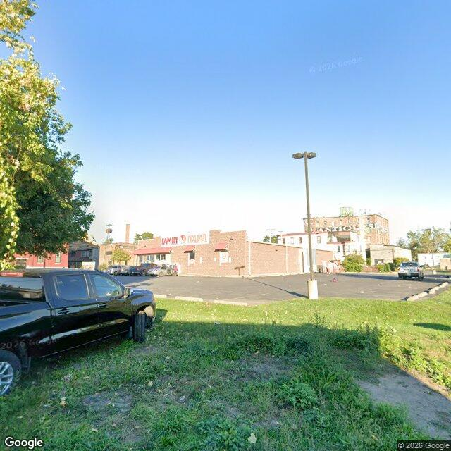

Property entry
1701 Salina St N & Wolf St
Published 2026-10-28T17:04:39+00:00
Parcel key: 002-01-051

City records
Matches use parcel IDs or normalized property addresses. Nearby properties are not treated as matches. Records may include historical or closed cases; check each record's status and dates. Publication dates are not source-data dates.
Vacant properties 0
No matches stored for this feed. The feed or address matching may be incomplete; this is not confirmation that no records exist.
Records refreshed 2026-10-27.
Rental registry 0
No matches stored for this feed. The feed or address matching may be incomplete; this is not confirmation that no records exist.
Records refreshed 2026-10-27.
Code violations 3
- Latitude
- 43.06973745
- Longitude
- -76.16594058
- Neighborhood
- Washington Square
- ObjectId
- 79221
- SBL
- 002.-01-05.1
- complaint_address
- 1701 Salina St N & Wolf St
- Latitude
- 43.06973745
- Longitude
- -76.16594058
- Neighborhood
- Washington Square
- ObjectId
- 79222
- SBL
- 002.-01-05.1
- complaint_address
- 1701 Salina St N & Wolf St
- Latitude
- 43.06973745
- Longitude
- -76.16594058
- Neighborhood
- Washington Square
- ObjectId
- 79223
- SBL
- 002.-01-05.1
- complaint_address
- 1701 Salina St N & Wolf St
Records refreshed 2026-10-27.
Unfit properties 0
No matches stored for this feed. The feed or address matching may be incomplete; this is not confirmation that no records exist.
Records refreshed 2026-10-27.
AI image observations (unverified)
These observations are generated from an image, not an inspection or an official code finding. No human verification is recorded here.
Image capture date: Not recorded. The entry publication date does not establish the age of the image.
Automated image description
The image displays a commercial property featuring a single-story brick building, identified as a Family Dollar store, with an adjacent asphalt parking lot and a grassy area in the foreground.
Property type guess: commercial
Visible conditions
- A single-story commercial building with a brick facade and a flat roof is visible.
- A large asphalt parking lot is situated in front of the building.
- A grassy area with some areas of unmanaged growth is present in the foreground.
- Several vehicles are parked in the lot.
- A street light pole stands within the parking lot.
Condition scores
- Roof
- not_visible
- Siding Or Facade
- fair
- Windows Doors
- good
- Porch Or Entry
- good
- Yard Or Lot
- fair
- Trash Debris
- none_visible
- Vegetation Overgrowth
- minor
Visible flags
- Boarded Windows Or Doors
- no
- Fire Damage Visible
- no
- Structural Damage Visible
- no
- Vacancy Signs Visible
- no
- Active Construction Visible
- no
Possible image-only flags
- The grassy area in the foreground exhibits some unmanaged growth, which could potentially be an unrecorded issue or related to existing code violations if they pertain to property maintenance.
AI review boxes
- Vegetation overgrowth: Unmanaged growth of tall grass and weeds in the foreground grassy area.
Review reasons
- Possible image-only issue
Image quality
- Available
- True
- Bytes
- 78230
- Needs Rerun
- False
['The image provides a street-level view, which may not show all aspects of the property, particularly the rear or roof.', "The specific nature of the '3 matching records' for code violations is not known, so a direct comparison to visible conditions is limited.", "The exact boundaries of the parcel '002-01-051' are not precisely discernible from the image, but the Family Dollar building and its immediate surroundings appear to be the primary focus."]
ACS tract context
Census Tract 5.01; Onondaga County; New York
- Total population
- 2133
- Median household income
- 36639
- Poverty rate
- 48.6
- Housing units
- 1127
- Vacancy rate
- 16.0
- Renter-occupied share
- 6.7
- Median gross rent
- 65900
OpenStreetMap nearby
60 meter search radius
Nearby map data is temporarily unavailable. This does not mean there are no mapped features.